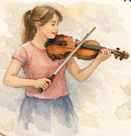
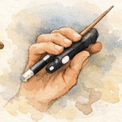
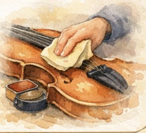

Violin Basics
These foundational skills help every student begin with confidence and healthy technique.
Posture
Good posture creates freedom and ease while playing. Students learn balanced standing or sitting positions that support relaxed movement.

Bow Hold
A flexible, curved bow hold allows for smooth tone and expressive playing. We build this gradually with simple exercises.

Instrument Care
Students learn how to tune safely, clean their instrument, and store it properly to protect the violin and bow.
